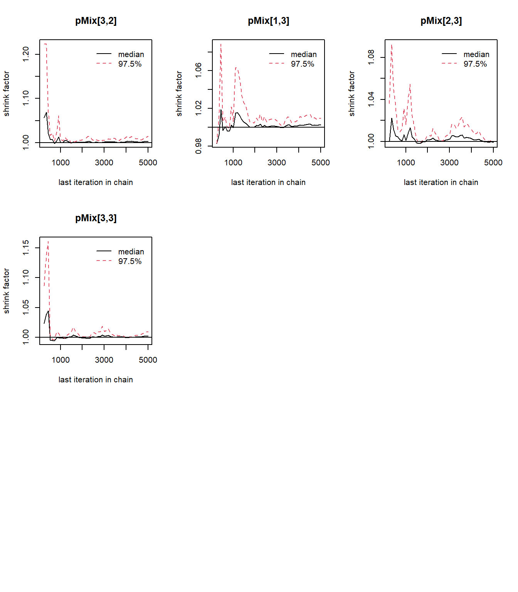
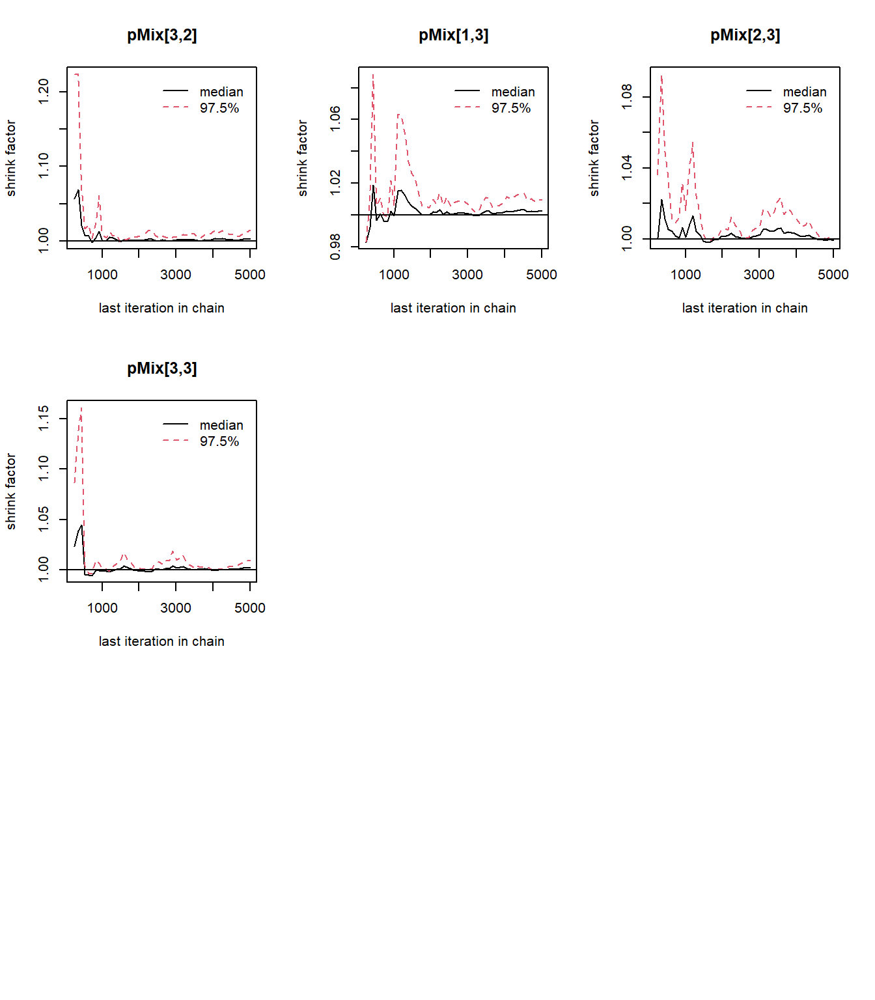
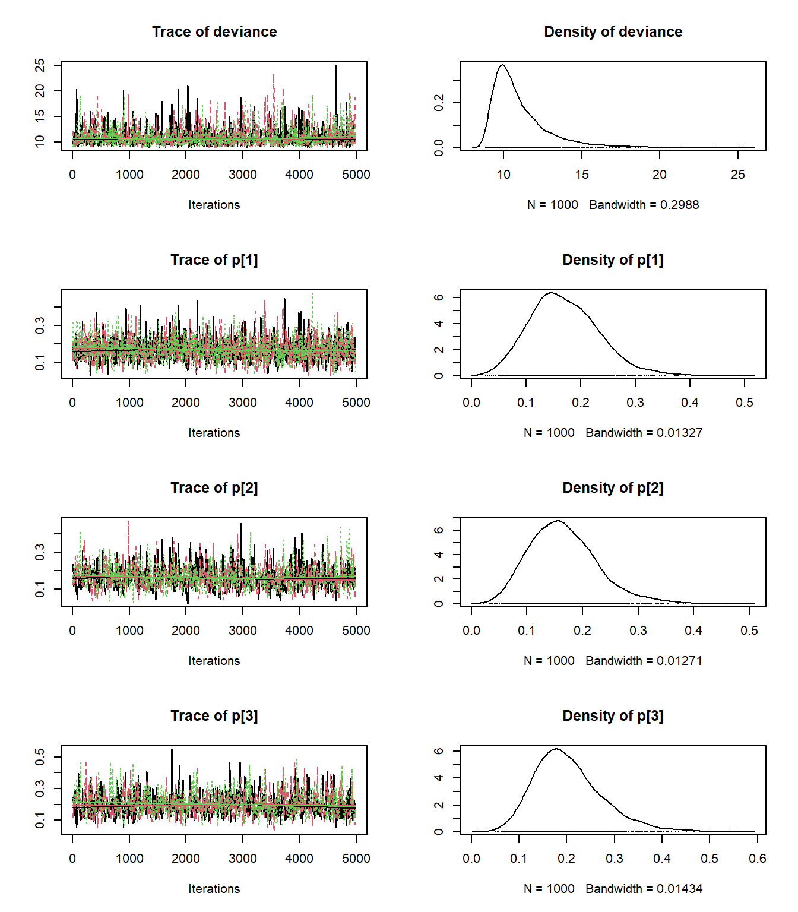
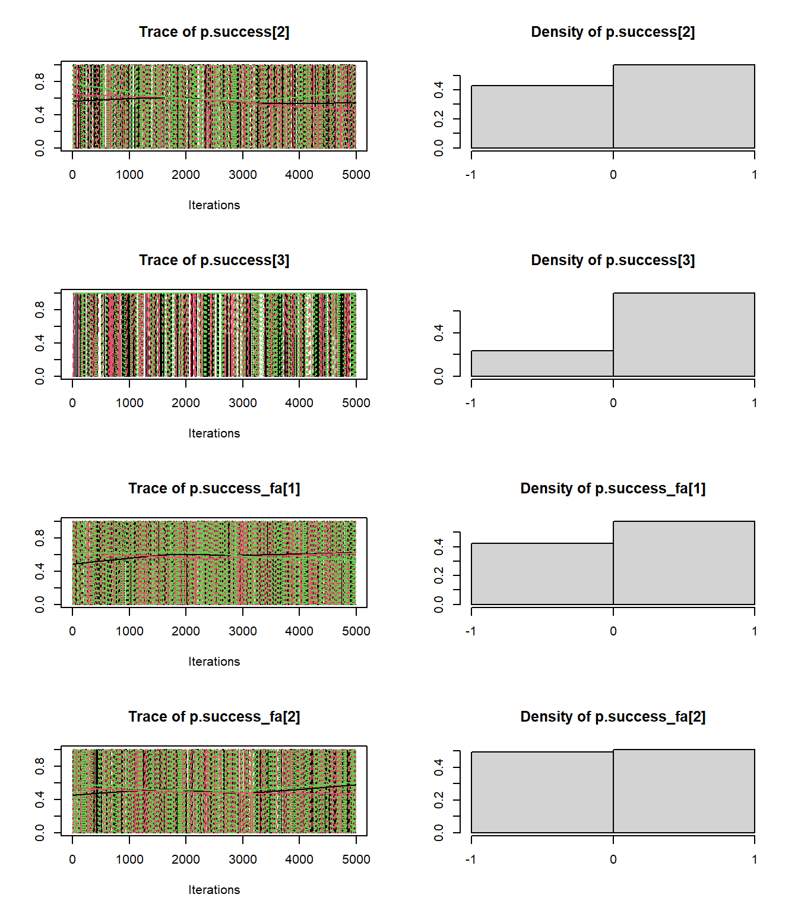
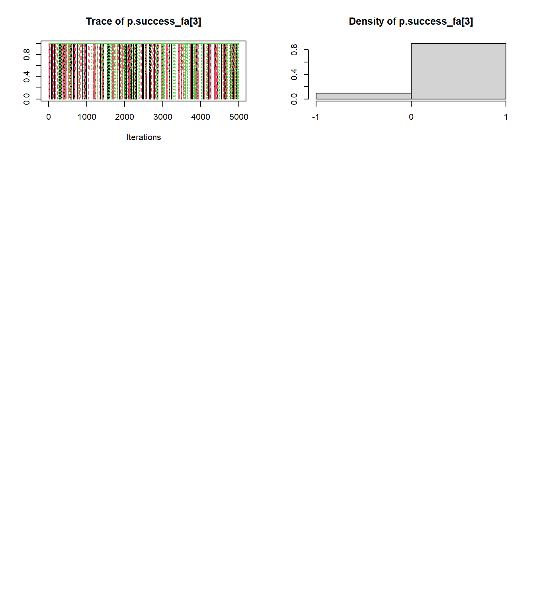
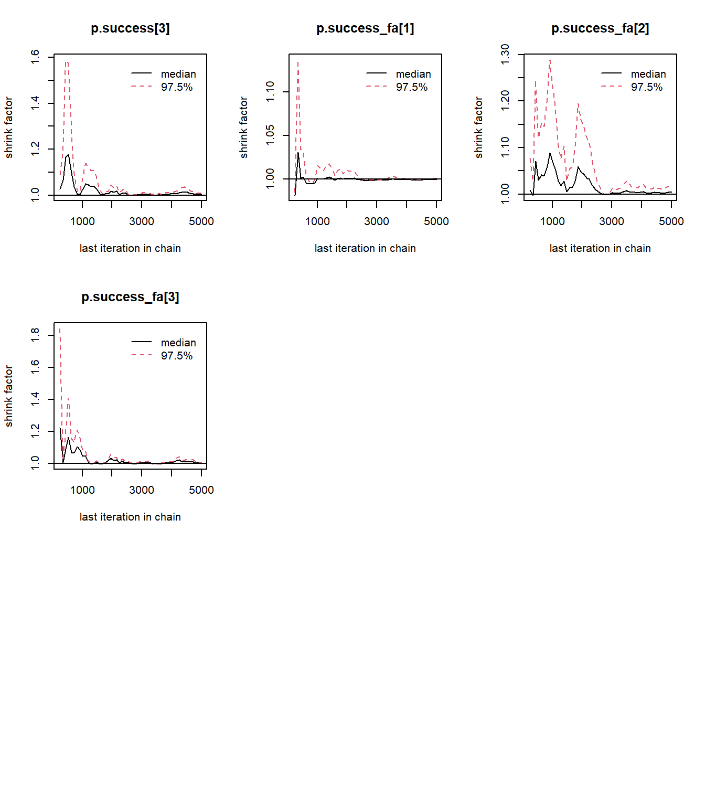
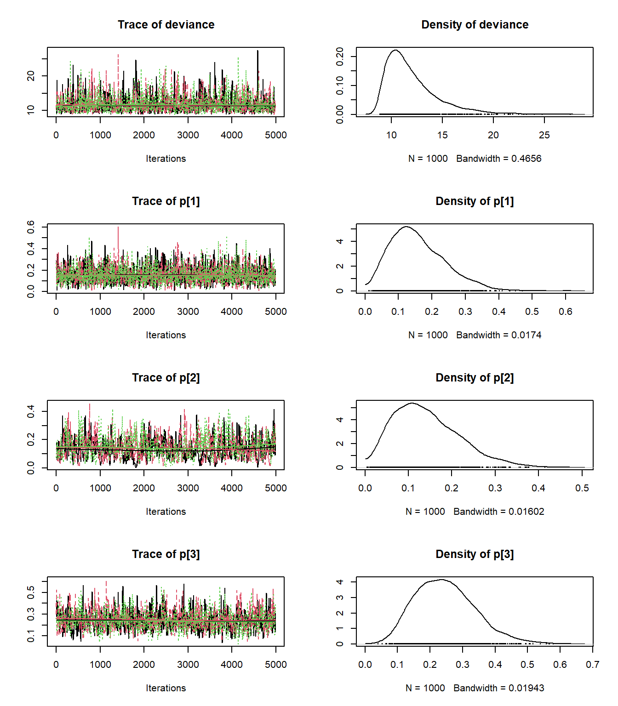
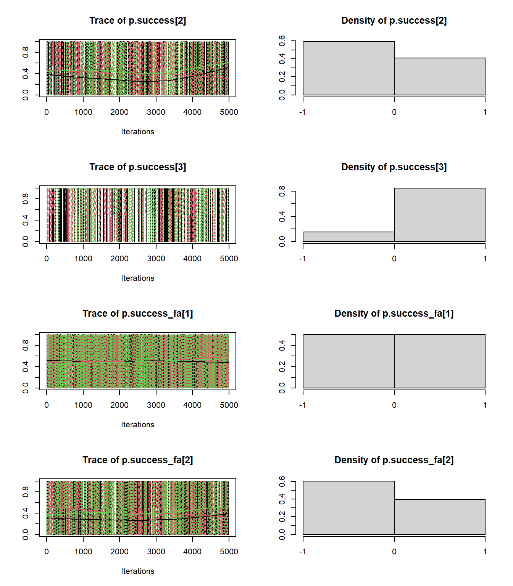
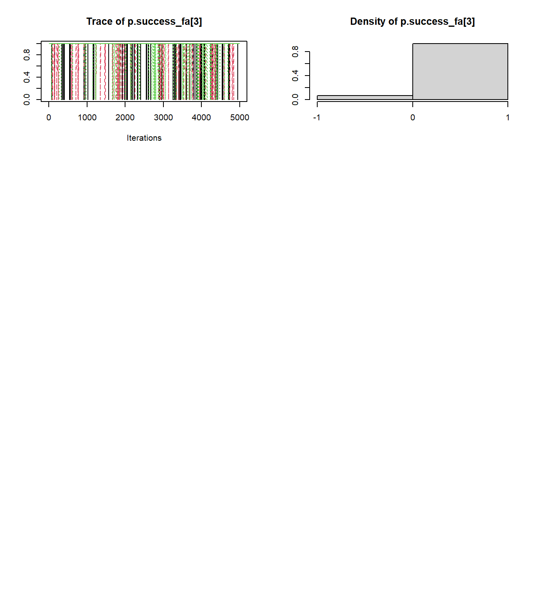
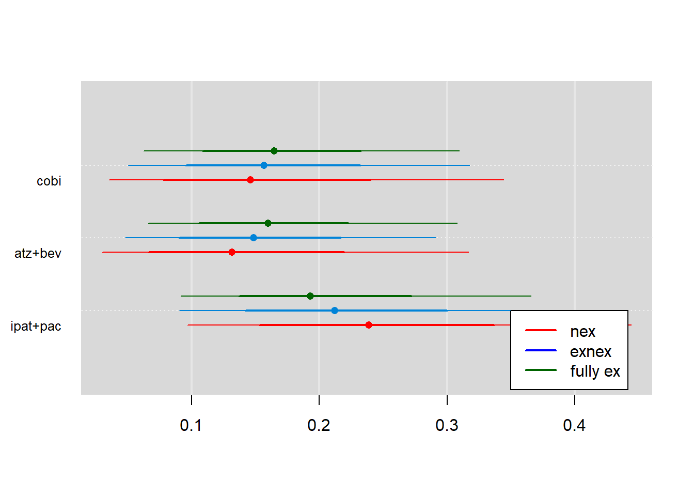

Bouquet - Borrowing X-cohort
Anh Nguyen Duc
04 March, 2023
0.1 WinBUGs model for binary EXNEX model with stochastic mixture weights
This is based on section 5.3 of https://onlinelibrary.wiley.com/action/downloadSupplement?doi=10.1002%2Fpst.1730&file=pst1730-sup-0001-supplementary.pdf
Original paper is https://onlinelibrary.wiley.com/doi/epdf/10.1002/pst.1730
### Model definition
binary_exnex_model2 <- function() {
## Data to be specify in the input
#-------------------------------------------------------------------------------
# Nexch - number of exchangeable components
# Nmix - number of mixture weights and must be Nexch+1
# Nstrata - number of strata e.g. studies or cohort (in platform trial)
# pMix - vector of Nmix mixture weights (summing up to 1)
# n - vector of Nstrata elements storing patient numbers for each stratum
# r - vector of Nstrata elements storing response numbers for each stratum
# n_fa - vector of Nstrata elements storing patient numbers for each stratum at final analysis
# mu.mean - vector of Nexch prior mean(s)
# mu.prec - vector of Nexch prior precision(s)
# tau.HN.scale - scale parameter of Half-Normal prior for tau
# nex.mean - prior mean for non-exchangeable component
# nex.prec - prior precision for non-exchangeable component
# p.cut - clinically relevant threshold for response rate to compare against
## Parameter(s) to be monitored
# p - posterior response rate
# p.success - posterior indicator if p > p.cut
# pMix - posterior mixture weight to test for "exchangeability"
# p.success_fa - posterior indicator if r_fa/n_fa > p.cut
#-------------------------------------------------------------------------------
# prior distributions for EX-parameters
for (jj in 1:Nexch) {
mu[jj] ~dnorm(mu.mean[jj],mu.prec[jj])
prior.tau.prec[jj] <- pow(tau.HN.scale[jj],-2)
tau[jj] ~ dnorm(0,prior.tau.prec[jj]);I(0.001,)
prec.tau[jj] <- pow(tau[jj],-2)
}
# log-odds parameters under EX
for (jj in 1:Nexch) {
for (j in 1:Nstrata) {
re[jj,j] ~ dnorm(0,prec.tau[jj])
LogOdds[jj,j] <- mu[jj]+re[jj,j]
}
}
# log-odds parameters under NEX
for (j in 1:Nstrata) {
LogOdds[Nmix,j] ~ dnorm(nex.mean,nex.prec)
}
# latent mixture indicators:
# exch.index: categorial 1,...,Nmix=Nexch+1
# exch: Nstrata x Nmix matrix of 0/1 elements
for (j in 1:Nstrata) {
exch.index[j] ~ dcat(pMix[1:Nmix])
for (jj in 1:Nmix) {
exch[j,jj] <- equals(exch.index[j],jj)
}
}
# pick theta
for (j in 1:Nstrata) {
theta[j] <- LogOdds[exch.index[j],j]
}
# likelihood part
for (i in 1:Nstrata) {
logit( p[i] ) <- theta[i]
p.success[i] <- step(p[i]-p.cut)
r[i] ~ dbin(p[i],n[i])
}
# un normalized mixture weights
for (j in 1:Nmix) {
pMix0[j] ~ dbeta(2, 2)
}
for (j in 1:Nmix) {
pMix[j] <- pMix0[j] / sum(pMix0)
}
# predictive part
for (i in 1:Nstrata) {
r_fa[i] ~ dbin(p[i], n_fa[i])
p.success_fa[i] <- step(r_fa[i]/n_fa[i]-p.cut)
}
} # end of binary_exnex_model2
write.model(binary_exnex_model2, 'binary_exnex_model2.bug')
### Parameters to monitor
parameters_binary_exnex_model2 <- c('p', 'pMix', 'p.success', 'p.success_fa')
### Data
n <- c('cobi'=20, 'atz+bev'=21, 'ipat+pac'=19)
r <- c( 5, 3, 3)
## EX part
mu.mean <- c(logit(.05), logit(.15)) # ex prior for hyper meanis centered at logit(0.05)
# ex precision for hyperpar mean based on (23) of https://onlinelibrary.wiley.com/action/downloadSupplement?doi=10.1002%2Fpst.1730&file=pst1730-sup-0001-supplementary.pdf
mu.prec <- 1/sqrt( 1/inv.logit(mu.mean) + 1/(1-inv.logit(mu.mean)) ) # still missing s^2 but this would only make the prior more non-informative
tau.HN.scale <- c(1,1)
## NEX part
nex.mean<-logit(.05) # prior mean for nex part
# prior precision for nex part based on (20) of https://onlinelibrary.wiley.com/action/downloadSupplement?doi=10.1002%2Fpst.1730&file=pst1730-sup-0001-supplementary.pdf
nex.prec <- 1/sqrt( 1/inv.logit(nex.mean) + 1/(1-inv.logit(nex.mean)) )
p.cut<-.15
pMix<-c(1,0,0)
Nstrata <- n %>% length
Nexch <- mu.mean %>% length
Nmix <- Nexch + 1
n_fa <- c(50, 50, 50)
data_binary_exnex_model2 <- list(Nexch=Nexch, Nmix=Nmix,
Nstrata=Nstrata,
n=n, r=r, n_fa=n_fa,
mu.mean=mu.mean, mu.prec=mu.prec,
tau.HN.scale=tau.HN.scale,
nex.mean=nex.mean, nex.prec=nex.prec,
p.cut=p.cut
)
### Inits
inits_binary_exnex_model2 <- function() {
list(
"mu"=rnorm(Nexch),
"tau"=rnorm(Nexch) %>% abs,
"pMix0"= rbeta(Nmix, 2, 2)
)
} # end of inits_binary_exnex_model
### Run MCMC
# JAGS
set.seed(36)
binary_exnex_jag2 <- jags(data = data_binary_exnex_model2,
inits = inits_binary_exnex_model2,
parameters.to.save = parameters_binary_exnex_model2,
model.file = "binary_exnex_model2.bug",
n.chains=3, n.iter=1e4, n.burnin=5e3)## module glm loaded## Compiling model graph
## Resolving undeclared variables
## Allocating nodes
## Graph information:
## Observed stochastic nodes: 3
## Unobserved stochastic nodes: 22
## Total graph size: 94
##
## Initializing modelprint(binary_exnex_jag2)## Inference for Bugs model at "binary_exnex_model2.bug", fit using jags,
## 3 chains, each with 10000 iterations (first 5000 discarded), n.thin = 5
## n.sims = 3000 iterations saved
## mu.vect sd.vect 2.5% 25% 50% 75% 97.5% Rhat n.eff
## p[1] 0.223 0.082 0.094 0.161 0.213 0.275 0.403 1.001 3000
## p[2] 0.151 0.069 0.043 0.099 0.144 0.192 0.306 1.001 3000
## p[3] 0.165 0.073 0.048 0.112 0.157 0.210 0.325 1.001 2600
## p.success[1] 0.803 0.398 0.000 1.000 1.000 1.000 1.000 1.001 2200
## p.success[2] 0.472 0.499 0.000 0.000 0.000 1.000 1.000 1.001 3000
## p.success[3] 0.537 0.499 0.000 0.000 1.000 1.000 1.000 1.002 1100
## p.success_fa[1] 0.750 0.433 0.000 0.000 1.000 1.000 1.000 1.001 3000
## p.success_fa[2] 0.451 0.498 0.000 0.000 0.000 1.000 1.000 1.001 3000
## p.success_fa[3] 0.520 0.500 0.000 0.000 1.000 1.000 1.000 1.001 3000
## pMix[1] 0.335 0.139 0.076 0.239 0.335 0.425 0.620 1.005 740
## pMix[2] 0.363 0.140 0.102 0.268 0.362 0.451 0.654 1.004 660
## pMix[3] 0.302 0.130 0.071 0.206 0.301 0.387 0.581 1.001 3000
## deviance 11.433 2.062 9.059 9.940 10.882 12.343 16.893 1.001 3000
##
## For each parameter, n.eff is a crude measure of effective sample size,
## and Rhat is the potential scale reduction factor (at convergence, Rhat=1).
##
## DIC info (using the rule, pD = var(deviance)/2)
## pD = 2.1 and DIC = 13.6
## DIC is an estimate of expected predictive error (lower deviance is better).binary_exnex_mcmc2 <- binary_exnex_jag2 %>% as.mcmc.rjags
binary_exnex_mcmc2 %>% summary##
## Iterations = 1:4996
## Thinning interval = 5
## Number of chains = 3
## Sample size per chain = 1000
##
## 1. Empirical mean and standard deviation for each variable,
## plus standard error of the mean:
##
## Mean SD Naive SE Time-series SE
## deviance 11.4330 2.06166 0.037641 0.035902
## p[1] 0.2230 0.08210 0.001499 0.001534
## p[2] 0.1509 0.06875 0.001255 0.001390
## p[3] 0.1650 0.07254 0.001324 0.001405
## p.success[1] 0.8030 0.39780 0.007263 0.007624
## p.success[2] 0.4720 0.49930 0.009116 0.009758
## p.success[3] 0.5370 0.49871 0.009105 0.009254
## p.success_fa[1] 0.7497 0.43328 0.007911 0.008289
## p.success_fa[2] 0.4513 0.49771 0.009087 0.009310
## p.success_fa[3] 0.5200 0.49968 0.009123 0.009124
## pMix[1] 0.3349 0.13892 0.002536 0.002895
## pMix[2] 0.3633 0.13969 0.002550 0.002728
## pMix[3] 0.3018 0.13028 0.002379 0.002640
##
## 2. Quantiles for each variable:
##
## 2.5% 25% 50% 75% 97.5%
## deviance 9.05862 9.93961 10.8820 12.3431 16.8933
## p[1] 0.09384 0.16133 0.2125 0.2746 0.4026
## p[2] 0.04280 0.09879 0.1441 0.1924 0.3062
## p[3] 0.04837 0.11188 0.1568 0.2102 0.3247
## p.success[1] 0.00000 1.00000 1.0000 1.0000 1.0000
## p.success[2] 0.00000 0.00000 0.0000 1.0000 1.0000
## p.success[3] 0.00000 0.00000 1.0000 1.0000 1.0000
## p.success_fa[1] 0.00000 0.00000 1.0000 1.0000 1.0000
## p.success_fa[2] 0.00000 0.00000 0.0000 1.0000 1.0000
## p.success_fa[3] 0.00000 0.00000 1.0000 1.0000 1.0000
## pMix[1] 0.07598 0.23907 0.3352 0.4253 0.6203
## pMix[2] 0.10236 0.26779 0.3617 0.4515 0.6539
## pMix[3] 0.07059 0.20605 0.3012 0.3874 0.5811binary_exnex_mcmc2 %>% plot
 

0.2 WinBUGs model for binary EXNEX model with fixed mixture weights
This is based on section 5.3 of https://onlinelibrary.wiley.com/action/downloadSupplement?doi=10.1002%2Fpst.1730&file=pst1730-sup-0001-supplementary.pdf
Original paper is https://onlinelibrary.wiley.com/doi/epdf/10.1002/pst.1730
### Model definition
binary_exnex_model <- function() {
## Data to be specify in the input
#-------------------------------------------------------------------------------
# Nexch - number of exchangeable components
# Nmix - number of mixture weights and must be Nexch+1
# Nstrata - number of strata e.g. studies or cohort (in platform trial)
# pMix - vector of Nmix mixture weights (summing up to 1)
# n - vector of Nstrata elements storing patient numbers for each stratum
# r - vector of Nstrata elements storing response numbers for each stratum
# n_fa - vector of Nstrata elements storing patient numbers for each stratum at final analysis
# mu.mean - vector of Nexch prior mean(s)
# mu.prec - vector of Nexch prior precision(s)
# tau.HN.scale - scale parameter of Half-Normal prior for tau
# nex.mean - prior mean for non-exchangeable component
# nex.prec - prior precision for non-exchangeable component
# p.cut - clinically relevant threshold for response rate to compare against
## Parameter(s) to be monitored
# p - posterior response rate
# p.success - posterior indicator if p > p.cut
# p.success_fa - posterior indicator if r_fa/n_fa > p.cut
#-------------------------------------------------------------------------------
# prior distributions for EX-parameters
for (jj in 1:Nexch) {
mu[jj] ~dnorm(mu.mean[jj],mu.prec[jj])
prior.tau.prec[jj] <- pow(tau.HN.scale[jj],-2)
tau[jj] ~ dnorm(0,prior.tau.prec[jj]);I(0.001,)
prec.tau[jj] <- pow(tau[jj],-2)
}
# log-odds parameters under EX
for (jj in 1:Nexch) {
for (j in 1:Nstrata) {
re[jj,j] ~ dnorm(0,prec.tau[jj])
LogOdds[jj,j] <- mu[jj]+re[jj,j]
}
}
# log-odds parameters under NEX
for (j in 1:Nstrata) {
LogOdds[Nmix,j] ~ dnorm(nex.mean,nex.prec)
}
# latent mixture indicators:
# exch.index: categorial 1,...,Nmix=Nexch+1
# exch: Nstrata x Nmix matrix of 0/1 elements
for (j in 1:Nstrata) {
exch.index[j] ~ dcat(pMix[1:Nmix])
for (jj in 1:Nmix) {
exch[j,jj] <- equals(exch.index[j],jj)
}
}
# pick theta
for (j in 1:Nstrata) {
theta[j] <- LogOdds[exch.index[j],j]
}
# likelihood part
for (i in 1:Nstrata) {
logit( p[i] ) <- theta[i]
p.success[i] <- step(p[i]-p.cut)
r[i] ~ dbin(p[i],n[i])
}
# predictive part
for (i in 1:Nstrata) {
r_fa[i] ~ dbin(p[i], n_fa[i])
p.success_fa[i] <- step(r_fa[i]/n_fa[i]-p.cut)
}
} # end of binary_exnex_model
write.model(binary_exnex_model, 'binary_exnex_model.bug')
### Parameters to monitor
parameters_binary_exnex_model <- c('p', 'p.success', 'p.success_fa')
### Data
data_binary_ex_model <- list(pMix=c(1,0,0), # full exchangeable
Nexch=Nexch, Nmix=Nmix,
Nstrata=Nstrata,
n_fa=n_fa, n=n, r=r,
mu.mean=mu.mean, mu.prec=mu.prec,
tau.HN.scale=tau.HN.scale,
nex.mean=nex.mean, nex.prec=nex.prec, p.cut=p.cut
)
data_binary_nex_model <- list(pMix=c(0,0,1), # non-exchangeable
Nexch=Nexch, Nmix=Nmix,
Nstrata=Nstrata,
n_fa=n_fa, n=n, r=r,
mu.mean=mu.mean, mu.prec=mu.prec,
tau.HN.scale=tau.HN.scale,
nex.mean=nex.mean, nex.prec=nex.prec, p.cut=p.cut
)
data_binary_exnex_model <- list(pMix=c(0.5,0,0.5), # exnex
Nexch=Nexch, Nmix=Nmix,
Nstrata=Nstrata,
n_fa=n_fa, n=n, r=r,
mu.mean=mu.mean, mu.prec=mu.prec,
tau.HN.scale=tau.HN.scale,
nex.mean=nex.mean, nex.prec=nex.prec, p.cut=p.cut
)
### Inits
inits_binary_exnex_model <- function() {
list(
"mu"=rnorm(Nexch),
"tau"=rnorm(Nexch) %>% abs
)
} # end of inits_binary_exnex_model
### Run MCMC
# JAGS
set.seed(36)
binary_exnex_jag <- jags(data = data_binary_exnex_model,
inits = inits_binary_exnex_model,
parameters.to.save = parameters_binary_exnex_model,
model.file = "binary_exnex_model.bug",
n.chains=3, n.iter=1e4, n.burnin=5e3)## Compiling model graph
## Resolving undeclared variables
## Allocating nodes
## Graph information:
## Observed stochastic nodes: 3
## Unobserved stochastic nodes: 19
## Total graph size: 89
##
## Initializing modelprint(binary_exnex_jag)## Inference for Bugs model at "binary_exnex_model.bug", fit using jags,
## 3 chains, each with 10000 iterations (first 5000 discarded), n.thin = 5
## n.sims = 3000 iterations saved
## mu.vect sd.vect 2.5% 25% 50% 75% 97.5% Rhat n.eff
## p[1] 0.217 0.081 0.089 0.158 0.206 0.263 0.403 1.002 1300
## p[2] 0.147 0.067 0.038 0.098 0.138 0.187 0.295 1.001 3000
## p[3] 0.161 0.071 0.045 0.108 0.153 0.204 0.320 1.001 3000
## p.success[1] 0.788 0.409 0.000 1.000 1.000 1.000 1.000 1.001 3000
## p.success[2] 0.433 0.496 0.000 0.000 0.000 1.000 1.000 1.000 3000
## p.success[3] 0.518 0.500 0.000 0.000 1.000 1.000 1.000 1.001 2800
## p.success_fa[1] 0.726 0.446 0.000 0.000 1.000 1.000 1.000 1.001 2700
## p.success_fa[2] 0.445 0.497 0.000 0.000 0.000 1.000 1.000 1.002 1800
## p.success_fa[3] 0.497 0.500 0.000 0.000 0.000 1.000 1.000 1.002 1500
## deviance 11.460 2.214 9.055 9.880 10.838 12.359 17.138 1.001 3000
##
## For each parameter, n.eff is a crude measure of effective sample size,
## and Rhat is the potential scale reduction factor (at convergence, Rhat=1).
##
## DIC info (using the rule, pD = var(deviance)/2)
## pD = 2.5 and DIC = 13.9
## DIC is an estimate of expected predictive error (lower deviance is better).# plot(binary_exnex_jag)
binary_exnex_mcmc <- binary_exnex_jag %>% as.mcmc.rjags
binary_exnex_mcmc %>% summary##
## Iterations = 1:4996
## Thinning interval = 5
## Number of chains = 3
## Sample size per chain = 1000
##
## 1. Empirical mean and standard deviation for each variable,
## plus standard error of the mean:
##
## Mean SD Naive SE Time-series SE
## deviance 11.4596 2.21374 0.040417 0.045431
## p[1] 0.2166 0.08079 0.001475 0.001857
## p[2] 0.1467 0.06678 0.001219 0.001327
## p[3] 0.1607 0.07089 0.001294 0.001315
## p.success[1] 0.7877 0.40903 0.007468 0.008493
## p.success[2] 0.4333 0.49562 0.009049 0.010160
## p.success[3] 0.5180 0.49976 0.009124 0.009124
## p.success_fa[1] 0.7260 0.44608 0.008144 0.008944
## p.success_fa[2] 0.4447 0.49701 0.009074 0.009653
## p.success_fa[3] 0.4967 0.50007 0.009130 0.008973
##
## 2. Quantiles for each variable:
##
## 2.5% 25% 50% 75% 97.5%
## deviance 9.05542 9.88041 10.8376 12.3592 17.1383
## p[1] 0.08909 0.15777 0.2059 0.2633 0.4032
## p[2] 0.03825 0.09798 0.1379 0.1866 0.2954
## p[3] 0.04494 0.10850 0.1531 0.2043 0.3197
## p.success[1] 0.00000 1.00000 1.0000 1.0000 1.0000
## p.success[2] 0.00000 0.00000 0.0000 1.0000 1.0000
## p.success[3] 0.00000 0.00000 1.0000 1.0000 1.0000
## p.success_fa[1] 0.00000 0.00000 1.0000 1.0000 1.0000
## p.success_fa[2] 0.00000 0.00000 0.0000 1.0000 1.0000
## p.success_fa[3] 0.00000 0.00000 0.0000 1.0000 1.0000binary_exnex_mcmc %>% plot
set.seed(36)
binary_ex_jag <- jags(data = data_binary_ex_model,
inits = inits_binary_exnex_model,
parameters.to.save = parameters_binary_exnex_model,
model.file = "binary_exnex_model.bug",
n.chains=3, n.iter=1e4, n.burnin=5e3)## Compiling model graph
## Resolving undeclared variables
## Allocating nodes
## Graph information:
## Observed stochastic nodes: 3
## Unobserved stochastic nodes: 19
## Total graph size: 89
##
## Initializing modelprint(binary_ex_jag)## Inference for Bugs model at "binary_exnex_model.bug", fit using jags,
## 3 chains, each with 10000 iterations (first 5000 discarded), n.thin = 5
## n.sims = 3000 iterations saved
## mu.vect sd.vect 2.5% 25% 50% 75% 97.5% Rhat n.eff
## p[1] 0.200 0.071 0.088 0.149 0.190 0.240 0.370 1.001 3000
## p[2] 0.161 0.059 0.060 0.120 0.156 0.196 0.289 1.001 3000
## p[3] 0.168 0.063 0.065 0.126 0.162 0.204 0.311 1.001 3000
## p.success[1] 0.747 0.435 0.000 0.000 1.000 1.000 1.000 1.001 3000
## p.success[2] 0.552 0.497 0.000 0.000 1.000 1.000 1.000 1.001 3000
## p.success[3] 0.582 0.493 0.000 0.000 1.000 1.000 1.000 1.001 3000
## p.success_fa[1] 0.678 0.467 0.000 0.000 1.000 1.000 1.000 1.001 3000
## p.success_fa[2] 0.523 0.500 0.000 0.000 1.000 1.000 1.000 1.001 3000
## p.success_fa[3] 0.548 0.498 0.000 0.000 1.000 1.000 1.000 1.001 3000
## deviance 11.041 1.917 9.074 9.766 10.467 11.661 16.256 1.001 2700
##
## For each parameter, n.eff is a crude measure of effective sample size,
## and Rhat is the potential scale reduction factor (at convergence, Rhat=1).
##
## DIC info (using the rule, pD = var(deviance)/2)
## pD = 1.8 and DIC = 12.9
## DIC is an estimate of expected predictive error (lower deviance is better).binary_ex_mcmc <- binary_ex_jag %>% as.mcmc.rjags
binary_ex_mcmc %>% summary##
## Iterations = 1:4996
## Thinning interval = 5
## Number of chains = 3
## Sample size per chain = 1000
##
## 1. Empirical mean and standard deviation for each variable,
## plus standard error of the mean:
##
## Mean SD Naive SE Time-series SE
## deviance 11.0414 1.91720 0.035003 0.049395
## p[1] 0.1996 0.07095 0.001295 0.002228
## p[2] 0.1611 0.05905 0.001078 0.001948
## p[3] 0.1685 0.06263 0.001144 0.001339
## p.success[1] 0.7467 0.43499 0.007942 0.011685
## p.success[2] 0.5520 0.49737 0.009081 0.014489
## p.success[3] 0.5817 0.49337 0.009008 0.010287
## p.success_fa[1] 0.6777 0.46745 0.008534 0.010771
## p.success_fa[2] 0.5230 0.49955 0.009121 0.011440
## p.success_fa[3] 0.5483 0.49774 0.009087 0.009090
##
## 2. Quantiles for each variable:
##
## 2.5% 25% 50% 75% 97.5%
## deviance 9.07425 9.7664 10.4667 11.6607 16.2556
## p[1] 0.08776 0.1495 0.1904 0.2402 0.3699
## p[2] 0.06027 0.1205 0.1563 0.1965 0.2891
## p[3] 0.06508 0.1260 0.1619 0.2040 0.3110
## p.success[1] 0.00000 0.0000 1.0000 1.0000 1.0000
## p.success[2] 0.00000 0.0000 1.0000 1.0000 1.0000
## p.success[3] 0.00000 0.0000 1.0000 1.0000 1.0000
## p.success_fa[1] 0.00000 0.0000 1.0000 1.0000 1.0000
## p.success_fa[2] 0.00000 0.0000 1.0000 1.0000 1.0000
## p.success_fa[3] 0.00000 0.0000 1.0000 1.0000 1.0000binary_ex_mcmc %>% plot
set.seed(36)
binary_nex_jag <- jags(data = data_binary_nex_model,
inits = inits_binary_exnex_model,
parameters.to.save = parameters_binary_exnex_model,
model.file = "binary_exnex_model.bug",
n.chains=3, n.iter=1e4, n.burnin=5e3)## Compiling model graph
## Resolving undeclared variables
## Allocating nodes
## Graph information:
## Observed stochastic nodes: 3
## Unobserved stochastic nodes: 19
## Total graph size: 89
##
## Initializing modelprint(binary_nex_jag)## Inference for Bugs model at "binary_exnex_model.bug", fit using jags,
## 3 chains, each with 10000 iterations (first 5000 discarded), n.thin = 5
## n.sims = 3000 iterations saved
## mu.vect sd.vect 2.5% 25% 50% 75% 97.5% Rhat n.eff
## p[1] 0.231 0.090 0.082 0.167 0.222 0.286 0.433 1.002 1100
## p[2] 0.134 0.071 0.031 0.080 0.122 0.178 0.293 1.002 3000
## p[3] 0.146 0.076 0.033 0.088 0.136 0.190 0.326 1.002 1900
## p.success[1] 0.814 0.389 0.000 1.000 1.000 1.000 1.000 1.001 3000
## p.success[2] 0.365 0.482 0.000 0.000 0.000 1.000 1.000 1.002 1400
## p.success[3] 0.428 0.495 0.000 0.000 0.000 1.000 1.000 1.001 3000
## p.success_fa[1] 0.762 0.426 0.000 1.000 1.000 1.000 1.000 1.001 3000
## p.success_fa[2] 0.374 0.484 0.000 0.000 0.000 1.000 1.000 1.001 2300
## p.success_fa[3] 0.424 0.494 0.000 0.000 0.000 1.000 1.000 1.001 3000
## deviance 12.074 2.563 9.096 10.207 11.411 13.264 18.445 1.001 2500
##
## For each parameter, n.eff is a crude measure of effective sample size,
## and Rhat is the potential scale reduction factor (at convergence, Rhat=1).
##
## DIC info (using the rule, pD = var(deviance)/2)
## pD = 3.3 and DIC = 15.4
## DIC is an estimate of expected predictive error (lower deviance is better).binary_nex_mcmc <- binary_nex_jag %>% as.mcmc.rjags
binary_nex_mcmc %>% summary##
## Iterations = 1:4996
## Thinning interval = 5
## Number of chains = 3
## Sample size per chain = 1000
##
## 1. Empirical mean and standard deviation for each variable,
## plus standard error of the mean:
##
## Mean SD Naive SE Time-series SE
## deviance 12.0739 2.56280 0.046790 0.071097
## p[1] 0.2313 0.08971 0.001638 0.002888
## p[2] 0.1345 0.07124 0.001301 0.002820
## p[3] 0.1465 0.07637 0.001394 0.001440
## p.success[1] 0.8140 0.38917 0.007105 0.010659
## p.success[2] 0.3650 0.48151 0.008791 0.015016
## p.success[3] 0.4277 0.49482 0.009034 0.009134
## p.success_fa[1] 0.7623 0.42572 0.007773 0.010769
## p.success_fa[2] 0.3740 0.48394 0.008836 0.013558
## p.success_fa[3] 0.4237 0.49422 0.009023 0.008678
##
## 2. Quantiles for each variable:
##
## 2.5% 25% 50% 75% 97.5%
## deviance 9.09622 10.20688 11.4112 13.2639 18.4454
## p[1] 0.08171 0.16707 0.2223 0.2858 0.4331
## p[2] 0.03132 0.08005 0.1224 0.1776 0.2925
## p[3] 0.03288 0.08812 0.1361 0.1904 0.3258
## p.success[1] 0.00000 1.00000 1.0000 1.0000 1.0000
## p.success[2] 0.00000 0.00000 0.0000 1.0000 1.0000
## p.success[3] 0.00000 0.00000 0.0000 1.0000 1.0000
## p.success_fa[1] 0.00000 1.00000 1.0000 1.0000 1.0000
## p.success_fa[2] 0.00000 0.00000 0.0000 1.0000 1.0000
## p.success_fa[3] 0.00000 0.00000 0.0000 1.0000 1.0000binary_nex_mcmc %>% plot
0.3 Credible interval for posterior distribution of “true” response rate
### Credible interval for selected parameters
mcmcplots::caterplot(binary_nex_jag, parms = c('p'), add=F, col='red', labels=n%>%names)
mcmcplots::caterplot(binary_exnex_jag2, parms = c('p'), add=T, cat.shift=.2, labels.loc=F)
mcmcplots::caterplot(binary_ex_jag, parms = c('p'), add=T, col='darkgreen', cat.shift=.4, labels.loc=F)